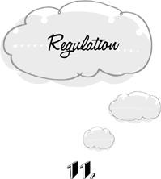
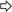
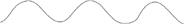
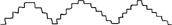

{% include JB/setup %}
{% raw %}
<div>

<h1 id="filepos193867" class="calibre19"><span class="calibre20"><span class="bold"><a class="calibre21"></a><a class="calibre21"></a></span></span></h1><div class="calibre16"> </div>
<p class="calibre22">                 <a class="calibre23"></a><a class="calibre23"></a>e’ve seen that we often think about our problems too soon or too late, too much or too little. The most elusive error, however, is to concern ourselves with topics that needn’t be thought about at all. In the twin traps of <em class="calibre9">regulation</em> and <em class="calibre9">formulation</em>, we adopt attitudes toward issues that don’t touch our lives, make decisions about events that are just as well left to whim or chance, or purposelessly keep up a blow-by-blow description of the passing scene, as though the movie of reality stood in need of narration.</p>
<p class="calibre22">Whether a particular superfluity of thinking is regulative or formulative depends on the quality of our mental processes. We need to make a distinction here between <em class="calibre9">descriptive</em> and <em class="calibre9">prescriptive</em> thinking. Descriptive thought says what a thing is; prescriptive thought intends that something be. When we make a mental note that the door is open, we’re thinking descriptively; when we resolve to shut it, we’re thinking prescriptively. <em class="calibre9">Regulation</em> is the trap of making useless <a class="calibre23"></a>prescriptions; <em class="calibre9">formulation</em> is useless description. We’ll examine regulation in this chapter and formulation in the next.</p>
<p class="calibre25">A purely descriptive idea leaves us at rest. When we note that the door is open, the matter is at an end. Prescriptive thought, however, urges us to adopt a line of action. Having told ourselves to shut the door, we feel the need to carry out our orders.</p>
<p class="calibre22">But prescriptions aren’t the only wellsprings of action. Living beings are active even when they’re not telling themselves what to do. A mosquito is unlikely to be wending its way through the world by means of prescriptions (“And now to suck his blood!”); yet it manages to sustain a fairly energetic lifestyle. And we humans too are always scratching, stretching, sniffing, and shifting about without telling ourselves to do so. The non-prescriptive sources of action, whatever they are, may simply be called <em class="calibre9">impulse.</em> Our activity, then, is either <em class="calibre9">impulsive</em> or <em class="calibre9">prescriptive</em>, depending on which of the following patterns it adheres to:</p>
<div class="calibre7"><blockquote class="calibre2"><span class="calibre3">
<p class="calibre24"><a class="calibre23"></a>Impulsive:<br class="calibre10"/>impulse  action ( descriptive thought)</p>
<p class="calibre25">Prescriptive:<br class="calibre10"/>(impulse ) prescriptive thought  action</p>
</span></blockquote></div><div class="calibre5"> </div>
<p class="calibre24">The parenthetical terms in each case refer to optional events. Scratching on impulse, we may also note descriptively that we are scratching; but our activity doesn’t require such a notation. And a prescribed movement may also be preceded by a redundant impulse to do the same thing, as when we happen to be hungry on our lunch hour.</p>
<p class="calibre22">These modes of action correspond to what an antiquated philosophical tradition once called our “lower” and our “higher” natures, respectively. Our two natures were conceived to be in a state of perpetual conflict, and mental health was defined as the absolute and permanent victory of prescription over impulse. Although antiquated, this view is by no means extinct.</p>
<p class="calibre22">Not surprisingly, some things are best done by prescription and some by impulse. Each mode of action has its own province. For example, projects that require the coordinated efforts of several people usually have to be approached prescriptively. If you <a class="calibre23"></a>and I are to carry a large sofa down the stairs, we must establish and adhere to certain ground rules. I can’t let go of my end simply because I have an impulse to rest. On the other hand, when we’re on vacation and free of any scheduled obligations, it would be foolish to continue to eat lunch precisely at noon regardless of whether we’re hungry. Here the rule of impulse makes our life more pleasant without bringing any disadvantages in its wake.</p>
<p class="calibre22">We fall into the trap of regulation when we prescribe our behavior in a situation where impulse would be a better guide. We regulate when we eat simply because it’s lunchtime, go to bed because it’s bedtime, or decide ahead of time how we will greet intimate friends who would no longer be surprised at anything we might blurt out. To be sure, we may also commit the opposite error of acting impulsively when we should be following a prescription. We don’t want our surgeon or our airline pilot to be guided by the whim of the moment. We want these people to have a <em class="calibre9">plan.</em> But overimpulsiveness is not a mental trap. By definition, mental traps are injurious habits of thought. Overimpulsiveness, however, is an insufficiency of thought. Like bankruptcy or breaking a leg, it’s a misfortune of another order.</p>
<p class="calibre22"><a class="calibre23"></a>Prescribing our behavior is a trap even when prescription is as good a guide as impulse. That is to say, impulse wins if it’s a tie. There are two reasons for this. The first is that prescribing is a species of <em class="calibre9">work</em>—it’s something that happens only if we <em class="calibre9">do</em> it. Impulse, however, arises by itself, without requiring any effort on our part. If both modes of functioning are equally effective, we might as well relax and let impulse do it. The same can be said of the far more frequent situation wherein we <em class="calibre9">can’t tell</em> whether a prescriptive or an impulsive approach would be more desirable.</p>
<p class="calibre22">The second reason that impulse wins ties is particularly important. In the course of discussing the previous nine traps, I’ve had several occasions to refer to the phenomenon of <em class="calibre9">mental inertia.</em> This is the tendency of agents to continue with what was begun, just because it was begun. It’s clear that the inertial tendency is a major cause of falling into mental traps. It propels us into persistence by causing us to keep working after the value of the goal is lost; it makes us fixate by causing us to keep working when there’s nothing to be done; it lands us in resistance by causing us to keep working toward an old goal when it’s time to do something new; and so on. <a class="calibre23"></a>The inertia to complete project X is produced when we adopt the <em class="calibre9">intention</em> to do X—equivalently, when we <em class="calibre9">prescribe</em> X for ourselves. <em class="calibre9">Impulse</em>, on the other hand, is inertialess. If we adopt the project of whistling “Row, Row, Row Your Boat,” we will experience at least a little bit of difficulty in stopping in midstream (as it were). But there’s no difficulty in stopping if we start to whistle the same tune impulsively, without <em class="calibre9">telling</em> ourselves to do it. This is a reason to prefer impulsivity to prescription, all other things being equal. <em class="calibre9">By acting on impulse, we avoid the inertia that can so easily precipitate us into mental traps.</em></p>
<p class="calibre25">Some ways of regulating our behavior are subtler than others. The most uncouth is simply to <em class="calibre9">ignore the impulse</em> and follow a prescription when impulse is the better guide. Our previous examples of regulation, such as eating lunch simply because it’s noon, all belong to this category. Some of us are so entirely ruled by prescription that we seem no longer to be aware that impulses exist. We shave every day (or refrain from shaving), wear a belt (or suspenders), drink coffee (or tea), and watch the news (or the soap operas) without even asking ourselves whether these <a class="calibre23"></a>routines are in accord with our current impulses. We’ve decreed that we shall be shaven and belted, and no amount of discomfort, distaste, or inconvenience can change the law.</p>
<p class="calibre22">When we rediscover the realm of spontaneous, undictated impulse, we naturally begin to work at loosening the stranglehold of universal prescription. But early attempts to regain our spontaneity invariably miscarry in curious ways. Instead of simply permitting ourselves to be guided by impulse, we institute prescriptions of an ever subtler order. Having ceased to ignore the impulse, we pass through a phase of <em class="calibre9">regulating the impulse—</em> that is, of finding laws that describe our impulsive behavior, and then turning these descriptive laws into new prescriptions. After years of eating dinner in an arbitrarily prescribed fashion, we discover that we enjoy the salad more when it comes <em class="calibre9">after</em> the main course. So we change over to a new prescription that ostensibly takes our true impulses into account: “Salads after entrées!”</p>
<p class="calibre22">In this type of regulation, impulse is no longer totally ignored; but it still isn’t permitted to govern actions belonging to its rightful sphere. Instead of directly following our inclinations, we consult a prescriptive rule that’s supposedly “true” to these <a class="calibre23"></a>inclinations. But no function is served by making a rule out of what happens naturally. If it’s true that we always enjoy salads more after the main course, impulse alone will cause us to eat them at the right time. Regulating the impulse is like vowing to continue to breathe. At the very least, it’s a redundant procedure, a waste of effort.</p>
<p class="calibre22">At the worst, regulating the impulse may lead us as far astray as totally ignoring the impulse. For our inclinations aren’t always so predictable as the desire to breathe. After preferring to eat our salad after the entrée for a number of years, we may find our tastes have changed. But if we’re in the habit of consulting the regulations instead of letting impulse rule, we may not notice the change for a long time. Yet because the regulations were originally based on observed patterns of impulsivity, we continue to believe that we’re acting “on impulse.” In this condition we’re even more befuddled than when the impulse was ignored right from the start, for then at least we entertained no such illusions.</p>
<p class="calibre22">Many of us are unable to discriminate between the regulation of impulse and impulsive action itself. We think that we’re doing what comes naturally when in fact we are first noting what comes naturally and then putting it in the <a class="calibre23"></a>form of a rule for better living. We decide that we like company more than solitude, city life more than country life, bright colors more than subdued colors—and then we rigidly adhere to these regulations in the name of pleasing ourselves. If we really did please ourselves, our behavior would change as soon as our inclinations changed. But the regulations based on our inclinations inevitably lag behind. We’re still surrounding ourselves with bright colors and crowds of people in the city long after these things only give us a headache. This is how the regulation of impulse leads to the trap of persistence.</p>
<p class="calibre25">After we’ve seen through the trap of regulating our impulses, we may yet fall into any of three increasingly devious modes of regulation— <em class="calibre9">reflecting the impulse, reading the impulse</em>, and <em class="calibre9">null regulation.</em> Each of these is a type of prescription that masquerades as impulse.</p>
<p class="calibre22">In <em class="calibre9">reflecting the impulse</em>, we give up trying to second-guess the twists and turns that will be taken by our impulsive life. We do not vow to eat our salad either after the main course or before. Instead, we vow that we will do it whenever we wish. We make it into a regulation that we will <a class="calibre23"></a>follow our impulses in this matter. We tell ourselves that we will eat when we are hungry, rest when we are tired, and so on. Now regulations of this type do keep our behavior more or less in line with our impulses. But they’re still a waste of time. When impulse rules, there’s no need for any conscious intervention whatsoever. Behavior follows impulse of its own accord. If only we remain inwardly silent, we <em class="calibre9">will</em> eat when we’re hungry and rest when we’re tired. By reflecting the impulse, we depart from the pattern for straightforwardly impulsive action:</p>
<div class="calibre7"><blockquote class="calibre2"><span class="calibre3">
<p class="calibre24">(impulse to do X)  (do X)</p>
</span></blockquote></div><div class="calibre5"> </div>
<p class="calibre24">and substitute for it a baroque variety of prescriptive activity:</p>
<div class="calibre7"><blockquote class="calibre2"><span class="calibre3">
<p class="calibre24">(impulse to do X)  (prescription: “when the impulse to do X is felt, do X”)  (do X)</p>
</span></blockquote></div><div class="calibre5"> </div>
<p class="calibre24">Instead of feeling hungry and then eating, we feel hungry, consult the prescription that we should eat when we are hungry, and <em class="calibre9">conclude</em> that we should eat. Clearly, this is an entirely useless procedure. Its only effect is to disrupt <a class="calibre23"></a>the spontaneous flow of impulsivity. We still eat when we’re hungry, but our actions are “sicklied o’er with the pale cast of thought.” Instead of acting like this:</p>
<p class="calibre4"></p><div class="calibre5"> </div>
<p class="calibre24">our behavior looks and feels like this:</p>
<p class="calibre4"></p><div class="calibre5"> </div>
<p class="calibre24">Our actions are only <em class="calibre9">approximations</em> of impulsivity.</p>
<p class="calibre22">The trap of <em class="calibre9">reading the impulse</em> is another step closer to true spontaneity. Here we no longer interpolate a redundant universal rule between impulse and action. But neither are we yet content to be guided directly by impulse. We deem it necessary at least to translate the impulse into a single prescriptive thought. Instead of:</p>
<div class="calibre7"><blockquote class="calibre2"><span class="calibre3">
<p class="calibre24">(impulse to do X)  (do X)</p>
</span></blockquote></div><div class="calibre5"> </div>
<p class="calibre24">we have:</p>
<div class="calibre7"><blockquote class="calibre2"><span class="calibre3">
<p class="calibre24">(impulse to do X)  (prescription: “do X!”)  (do X)</p>
</span></blockquote></div><div class="calibre5"> </div>
<p class="calibre24"><a class="calibre23"></a>Instead of simply eating when we are hungry, we note our hunger and tell ourselves to eat.</p>
<p class="calibre22">Reading the impulse is an advance over reflecting the impulse, in that a certain amount of useless mental work has been thinned out. We no longer pretend to be following a general law. But we still insist on telling ourselves what to do when we would do the same thing spontaneously. We are like an inept corporate executive who, fearful of losing his grip, insists that all directives be funneled through his office, if only for a rubber stamping. Impulse speaks to us in the language of feelings, and we echo it inanely on the level of prescriptive thought: “Eat … drink … go to sleep … relax … have fun … have an orgasm … smile …”</p>
<p class="calibre22">The last refinement of regulation is the trap of <em class="calibre9">null regulation.</em> Having perceived the useless-ness of even reading the impulse, we vow henceforth to let impulse rule in its proper domain without imposing any intermediate prescriptions whatever. And then when impulse makes itself felt, we invoke the prescription that permits it to rule. We feel hungry or tired, tell ourselves not to prescribe in such a situation, and then eat or rest. We tell ourselves to be spontaneous. We resolve <a class="calibre23"></a>to go with the flow. In effect, we prescribe that we shall not be prescriptive. Of course this directive can never be fulfilled, because it’s self-contradictory. We can no more command spontaneity of ourselves than slaves can be set free by an act of their masters. Slaves must free themselves, and spontaneity can be allowed to emerge only by itself. Instead of achieving genuine impulsivity of this form:</p>
<div class="calibre7"><blockquote class="calibre2"><span class="calibre3">
<p class="calibre24">(impulse to do X)  (do X)</p>
</span></blockquote></div><div class="calibre5"> </div>
<p class="calibre24">we fall prey to yet another redundant prescription:</p>
<div class="calibre7"><blockquote class="calibre2"><span class="calibre3">
<p class="calibre24">(impulse to do X) <br class="calibre10"/>(prescription: “let impulse rule!”)  (do X)</p>
</span></blockquote></div><div class="calibre5"> </div>
<p class="calibre22">Null regulation is prescriptive action in its most exquisite disguise. At no point do we actually tell ourselves what to do, as in the previous varieties of regulation. We simply tell ourselves to follow our impulses. But if we must <em class="calibre9">tell</em> ourselves to follow them, the final authority for what we do is still prescriptive. We’ve likened the trap of <em class="calibre9">reading</em> the impulse to an executive’s having to approve every decision made by his subordinates. <a class="calibre23"></a>In null regulation, the executive only pretends to give his subordinates a greater measure of independence. He no longer explicitly approves or disapproves of their decisions. Instead, he looks at each decision in turn and indicates whether they shall have the freedom to decide in this particular case. The net result is the same as before. Granting freedom of choice on a case-by-case basis <em class="calibre9">after</em> the decision has been made is equivalent to approving or disapproving. It’s only a trick.</p>
<p class="calibre22">At this stage in our struggle against regulation, we’re apt to say things like “The only rule is that there are no rules.” Like the skeptic who is certain that nothing can be known for sure, we’re oblivious to the untenability of our position.</p>
<p class="calibre25">What causes us to resort to cumbersome prescriptions when effortless impulsivity would suffice? There can be only one motive. We have lost all confidence in impulsivity as a guide for action. Some of us are no longer aware that impulses are even <em class="calibre9">capable</em> of guiding action, whether for good or ill. We think that as soon as we cease to tell ourselves what to do, we will stop dead in our tracks, having no basis upon which to choose one action over another. We make our way through <a class="calibre23"></a>the world by perpetually kicking our own behinds, first to the left and then to the right.</p>
<p class="calibre22">And after we recognize both the existence and the legitimacy of certain classes of impulse, we still insist on passing each individual case to our prescriptive apparatus for final approval. We’re afraid that raw impulse, unchecked by prescription, will make our actions chaotic, absurd, or downright dangerous. If we don’t tell ourselves what to do at every moment, we may wander away from home, forget to urinate, or stick a thumb in our eye. This view is utterly refuted by the ordered existence of the non-prescribing “lower” animals, not to mention trees and plants. To be sure, rabbits and daffodils can’t build rockets to the moon or hold committee meetings. But we’re not always busy with rockets and committees ourselves.</p>  <div class="mbppagebreak" id="calibre_pb_26"></div></div>

{% endraw %}

